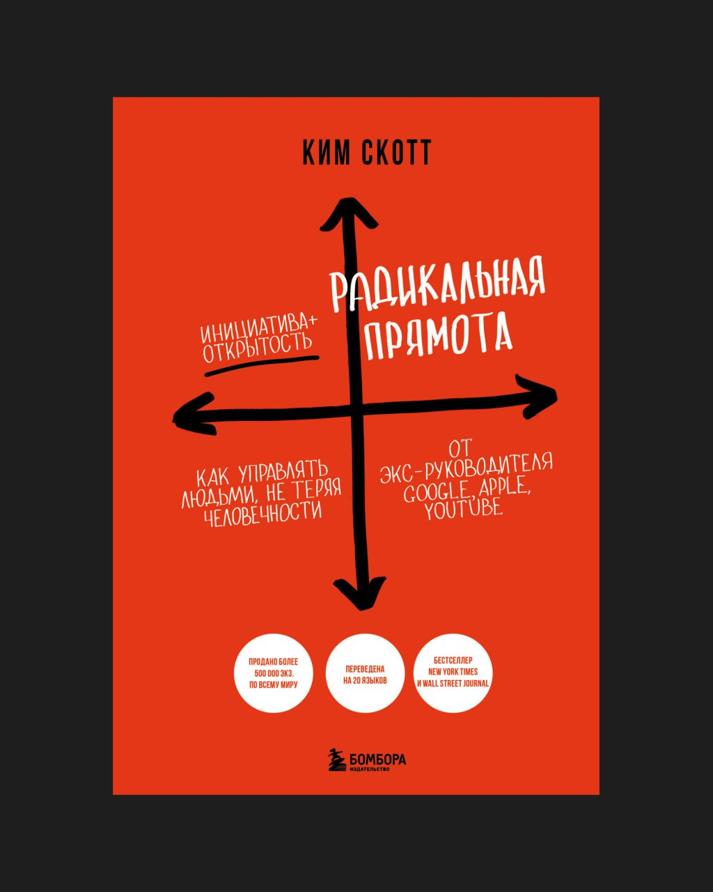

В Serenity мы всегда стремились развивать культуру откровенной обратной связи. Эта книга сильно углубила для меня эту тему. При чтении я поймал себя на простой и неприятной мысли: уровень моей откровенности как руководителя все еще недостаточен. Жалея чувства и не говоря прямо, я делаю хуже сразу всем — компании, человеку и себе.
С тех пор стараюсь быть заметно более откровенным и, главное — более регулярным в обратной связи. Не ждать, не копить, не сглаживать углы.
При этом я все равно вижу, как людям, и мне самому, крайне сложно говорить друг другу правду о работе адекватно. Чаще это либо слишком мягко, так что ничего не понятно, либо слишком токсично, так что хочется закрыться и защищаться.
Отдельная сложность — страх негативной обратной связи. Мы боимся ее больше всего, хотя именно она чаще всего и является лучшим источником роста. К ней важно учиться относиться не как к угрозе, а как к рабочему сигналу — через доверие, а не через защиту.
Автор книги — Ким Скотт, бывший топ‑менеджер Google и Apple, работавшая с руководителями в одних из самых требовательных технологических культур. Книга — выжимка из практики построения сильных команд, где результат и честность неразделимы друг от друга.
Для меня ценность этой темы в ее болезненной актуальности. Если мы хотим расти быстрее и устойчивее, с этим нужно что‑то делать: говорить о проблемах раньше, делать обратную связь регулярной, не путать заботу с мягкостью, которая мешает говорить прямо, и учиться принимать сложные разговоры без защиты.
В карточках ключевые идеи книги.
Карточки
Забота и радикальная прямота - не противоположные понятия
В управлении часто путают человечность с мягкостью Кажется, что если не давить и не обострять, то отношения сохранятся, но автор показывает, что это иллюзия. Забота о человеке не отменяет необходимости говорить правду о работе. Когда руководитель выбирает только комфорт, он лишает человека роста. Когда выбирает только жесткость - разрушает доверие. Радикальная прямота возникает там, где есть уважение к человеку и ясные требования к результату.
Молчание создает скрытые проблемы
Молчание выглядит безопасным, но именно оно губительно Ошибки не проговариваются, отклонения становятся нормой, напряжение подавляется и копится. Чем дольше проблемы не обсуждают прямо, тем тяжелее последствия для людей и результата.
Напряжение может быть рабочим
Сильные команды - не те, где нет напряжения, а те, где с ним умеют обращаться Радикальная прямота переводит напряжение из токсичной формы в рабочую. Когда о сложном можно говорить напрямую, энергия не тратится на догадки, защиту и внутренние разговоры. Напряжение начинает работать на ясность и скорость.
Главный страх руководителя
Основной барьер - страх испортить отношения Руководитель путает заботу с избеганием неприятных, но важных разговоров, и откладывает их. Но именно это со временем разрушает доверие сильнее всего. Недосказанность всегда считывается.
Редкий фидбек усиливает напряжение
Когда обратная связь появляется только в сложных моментах, она воспринимается как резкая и токсичная критика - в один разговор попадает все накопленное. Регулярный фидбек снимает напряжение. Короткие и частые корректировки делают прямоту частью нормальной работы, а не экстренной мерой.
Как давать и получать обратную СВЯЗЬ
Обратная связь должна быть конкретной и про действия Не про личность, не про намерения, а про то, что произошло и к чему это привело. Каждый разговор должен заканчиваться ясным ориентиром: как теперь делаем дальше. Получая фидбек, важно не защищаться, а прояснять и фиксировать выводы.
Культурное сопротивление и ответственность
Если раньше в команде не использовали радикальную прямоту, первые попытки почти всегда воспринимаются болезненно. Это нормальный этап изменений. Радикальная прямота - ответственность руководителя не лишать людей правды, даже если она неудобна. Молчание выглядит гуманным только до тех пор, пока не приводит к большим провалам.